靜力學
(資料待補充)
1-1 Mechanics 力學
分類
- Rigid-body mechanics 剛體力學
- Deformable-body mechanics 變形體力學
- Fluid mechanics 流體力學
Statics 靜力學
- At rest 靜止
- Move with constant velocity 等速
Dynamics 動力學
1-2 Fundamental Concepts 基本概念
Basic Quantities 基本量
- Length 長度
- Time 時間
- Mass 質量
- Force 力
Idealizations 理想化
- Particle 質點
- Rigid body 剛體
- Concentrated force
Newton's Three Laws of Motion 牛頓三大運動定律
- First law：靜者恆靜, 動者恆作等速直線運動
- Second law：F = ma
- Third law：反作用力
Newton's Law of Gravitational Attraction
G = 6.673×10-13 (m³/kg•s²)
W = GmMe / r² , g = GMe / r² , W = mg
1-3 The International System of Units (SI制)
Basic Units 基本量
- Length 長度 / meter / (m)
- Time 時間 / second / (s)
- Mass 質量 / kilogram / (kg)
- Force 力 / newton / (N = kg•m / s2)
Prefix 前綴詞
Multiple
- 109 / giga / G
- 106 / mega / M
- 103 / kilo / k
Submultiple
- 10-3 / milli / m
- 10-6 / micro / µ
- 10-9 / nano / n
1-4 Numerical Calculation 數值計算
- Dimensional homogeneity 尺寸均勻性
- Significant figures 有效數字
- Rounding of numbers 四捨五入
2-1 Scalars and Vectors
- Scalar 純量
- Vector 向量
- 向量以粗體 A 表示, 向量大小以斜體 A 表示
2-2 Vector Operation 向量運算
\[ \mathbf{R}=\mathbf{A}+\mathbf{B},\quad \mathbf{R'}=\mathbf{A}-\mathbf{B}=\mathbf{A}+(-\mathbf{B}) \]
-
Parallelogram law 平行四邊形原理
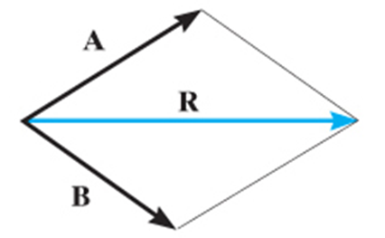
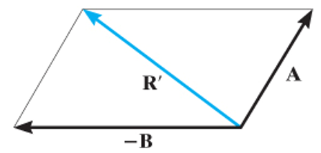
-
Triangle rule 三角法則
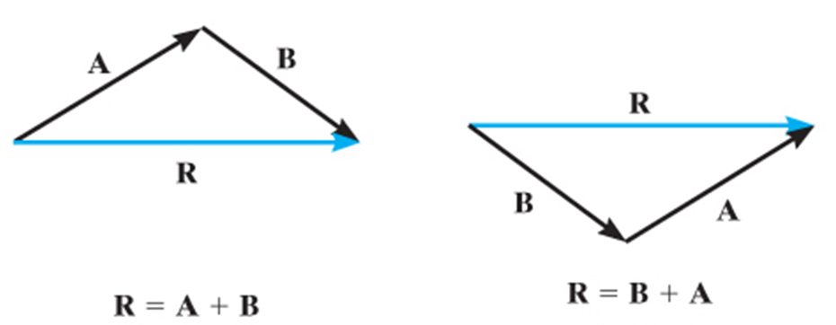
2-3 Vector Addition of Forces
- Resultant force 合力 FR
\[ \mathbf{F}_{R} = \mathbf{F}_{1} + \mathbf{F}_{2} \]
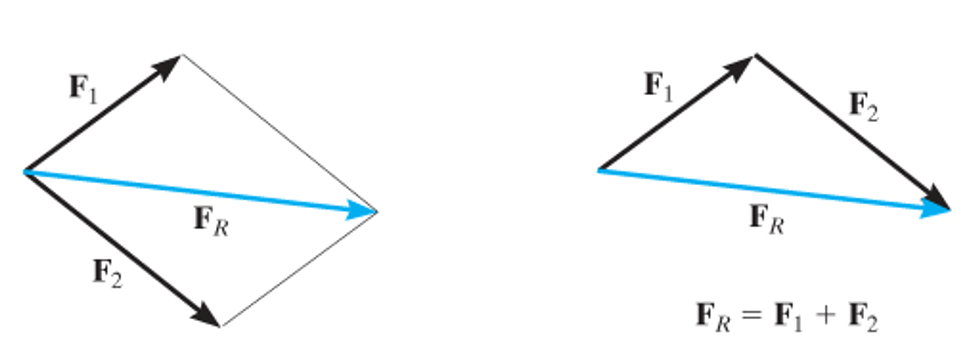
- Components of a force 力的分量
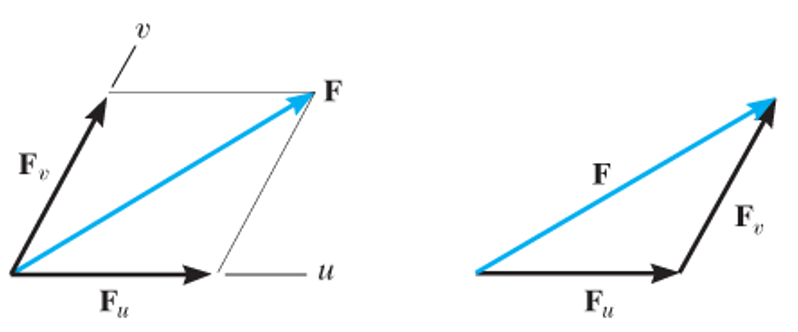
2-4 Addition of a System of Coplanar Forces
-
Rectangular components 矩形分量
-->力分解成沿 x 軸與 y 軸的兩個分量Fx 、Fy
Scalar notation
\[ \mathbf{F}_{x} = F \, cos \, \theta\quad \mathbf{F}_{y}=F \, sin \, \theta \]
Cartesian vector notation
\[ \mathbf{F}=F_{x} \, \mathbf{i} + F_{y} \, \mathbf{j} \]
Coplanar force resultants
\[ \mathbf{F}_{1}=F_{1x} \, \mathbf{i} + F_{1y} \, \mathbf{j} \]\[ \mathbf{F}_{2}=-F_{2x} \, \mathbf{i} + F_{2y} \, \mathbf{j} \]\[ \mathbf{F}_{3}=F_{3x} \, \mathbf{i} - F_{3y} \, \mathbf{j} \]
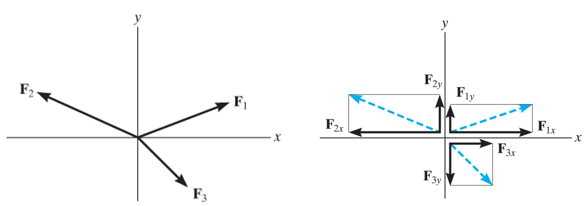
\( \begin{align*} \mathbf{F}_{R} &= \mathbf{F}_{1} + \mathbf{F}_{2} + \mathbf{F}_{3} \\ &= F_{1x} \, \mathbf{i} + F_{1y} \, \mathbf{j} -F_{2x} \, \mathbf{i} + F_{2y} \, \mathbf{j} + F_{3x} \, \mathbf{i} - F_{3y} \, \mathbf{j} \\ &= (F_{1x} - F_{2x} + F_{3x}) \, \mathbf{i} + (F_{1y} + F_{2y} - F_{3y})\,\mathbf{j} \\ &= (F_{Rx})\,\mathbf{i} + (F_{Ry})\,\mathbf{j} \end{align*} \)
FR = √(FRx)2 + (FRy)2
2-5 Cartesian Vector
Right-handed coordinate system
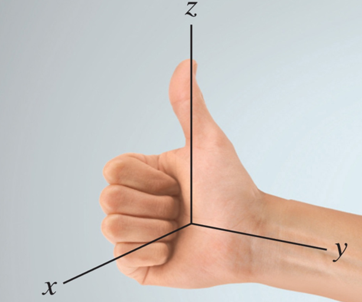
Rectangular components of a vector
Cartesian vector representation
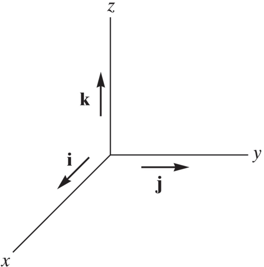
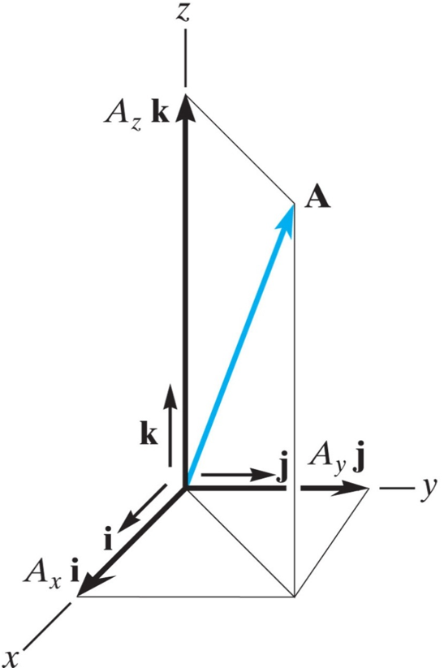
Magnitude of a cartesian vector
Coordinate direction angles:
= cosα i + cosβ j + cosγ k
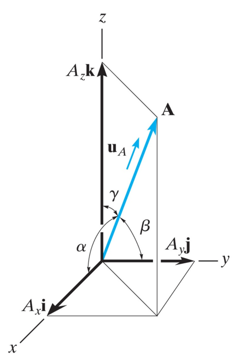
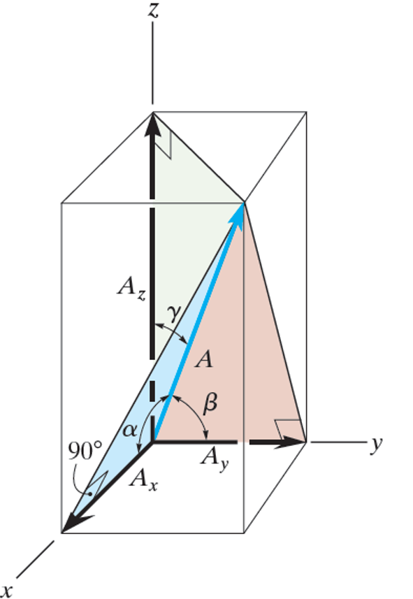
若已知 A 的大小與角度：
2-6 Addition of Cartesian Vectors
FR = ΣF = ΣFxi + ΣFyj + ΣFzk
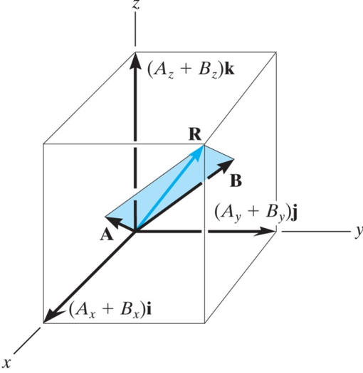
2-7 Position Vectors
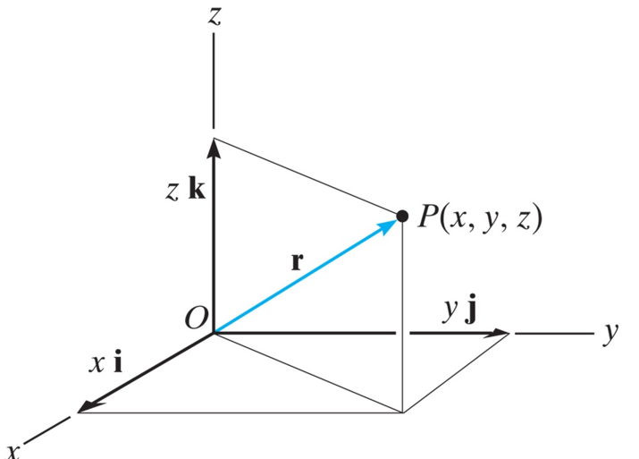
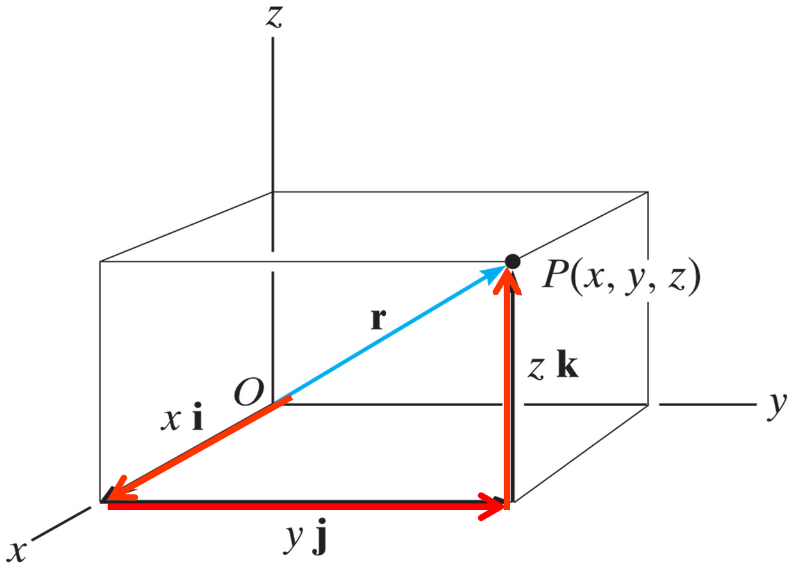
r = (xB - xA)i + (yB - yA)j + (zB - zA)k
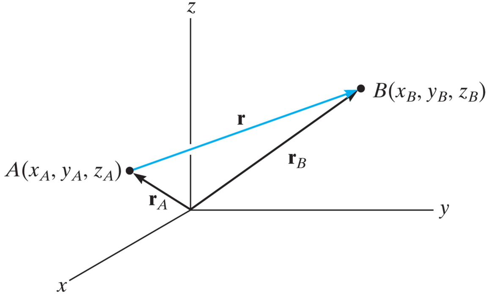
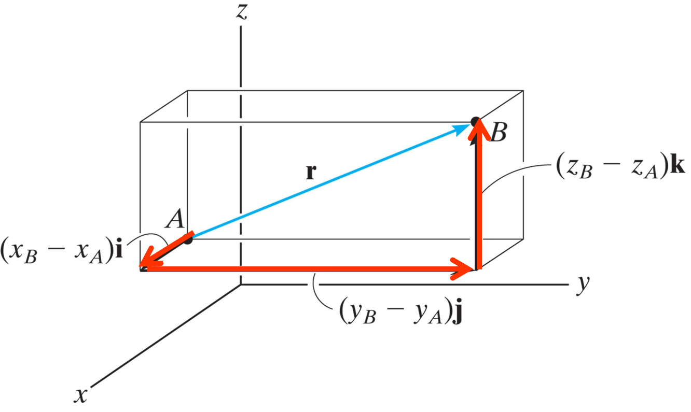
2-8 Force Vector Directed Along a Line
= F [(xB - xA)i + (yB - yA)j + (zB - zA)k] /
[√(xB - xA)2 + (yB - yA)2 + (zB - zA)2]
2-9 Dot Product 點積 / 內積
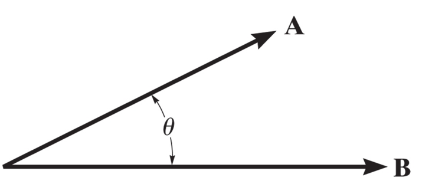
夾角：
A • B = 0 → A ⟂ B
射影：
\( A_{a} = A \cos\theta = \mathbf{A} \cdot \mathbf{u}_{a} \quad \text{向量形式：} \mathbf{A}_{a} = A_{a}\,\mathbf{u}_{a} \)
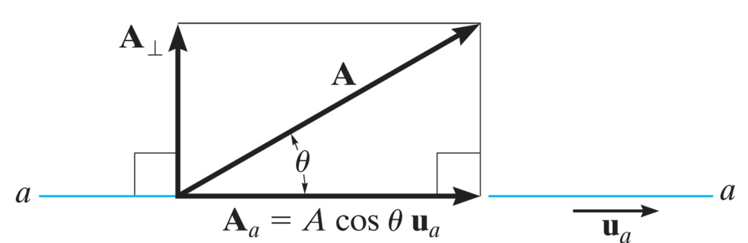
3-1 Condition for the Equilibrium of a Particle
\[ \displaystyle \sum \mathbf{F} = 0 = m \mathbf{a}, a = 0 \]
--> 合力與加速度為0, 粒子呈靜止或等速運動
3-2 The Free-Body Diagram 自由體圖
Three types of supports often encountered in particle equilibrium problems
- Linearly elastic spring 線性彈簧
-> 彈簧受力與變形量成正比
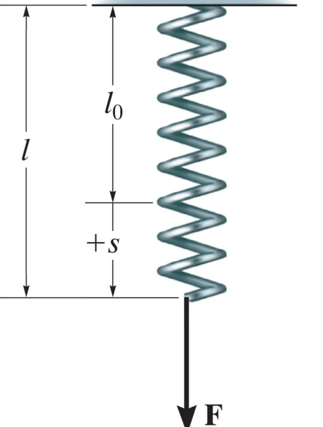
- Cables and pullesy 繩索與滑輪
->同一繩子張力T 大小相同,受力方向沿繩索方向
無摩擦力滑輪, 繩兩側張力大小相同
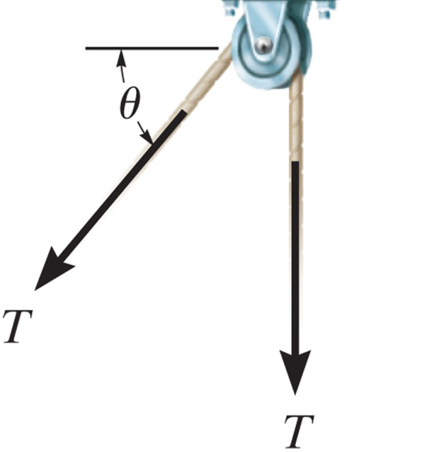
- Smooth contact 光滑接觸面
->無摩擦力, 只有垂直受力面的正向力N
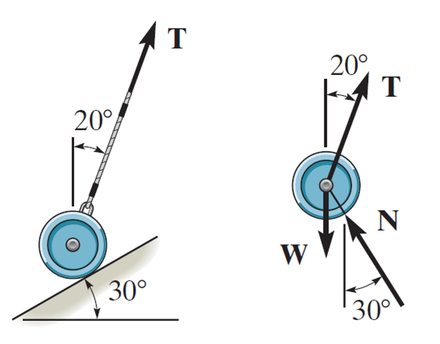
3-3 Complaner Force Systems 二維力系統
3-4 Three-Dimensional Force Systems 三維力系統
4-1 Moment of a Force - Scalar Formulation 力矩
torque/moment 力矩Magnitude
\[ M_o = Fd \]
- Mo: 力矩
- d: moment arm 力臂
4-2 Cross Product 外積
\( \mathbf{C} = \mathbf{A} \times \mathbf{B} \)
magnitude
\( C = AB \sin\theta \)
direction
\( \mathbf{C} = \mathbf{A} \times \mathbf{B} = (\mathit{AB}\,\sin\theta)\,\mathbf{u}_{c} \)
laws of operation
\[ \mathbf{A} \times \mathbf{B} = -\mathbf{B} \times \mathbf{A} \] \[ a(\mathbf{A} \times \mathbf{B}) = (a\mathbf{A}) \times \mathbf{B} = \mathbf{A} \times (a\mathbf{B}) \] \[ \mathbf{A} \times (\mathbf{B} + \mathbf{D}) = (\mathbf{A} \times \mathbf{B}) + (\mathbf{A} \times \mathbf{D}) \]
4-3 Moment of a Force – Vector Formulation
4-4 Principle of Moments
法里農定理 (Varignon's Theorem)
一力對某點之力矩, 等於該力各分力對同點力矩之向量和
4-5 Moment of a Force about a Specified Axis 力對特定軸之力矩
計算力在某一特定方向（軸）上產生的轉動效果
Scalar Analysis
力作用線到指定軸線$A$的距離為 $d_a$
即可知力對指定軸線的力矩$M_a$
Vector Analysis
- $\mathbf{u_a}:$ 單位向量（定義a軸方向）
- $\mathbf{r}:$ 從轉動點指向力作用線上任一點的向量
- $\mathbf{F}:$ 力向量
以笛卡爾向量表示:
4-6 Moment of a Couple
力偶 (Couple) 是由兩個大小相等、方向相反且不共線的平行力組成的力產生, 其純矩與轉動點位置無關
Scalar Formulation
Vector Formulation
4-7 Simplification of a Force and Couple System
可將複雜的力系簡化為作用於一點的一個合力 ($F_R$) 及一個合力矩 ($M_{RO}$)
4-8 Further Simplification of a Force and Couple System
共點、平面或平行的力系可以簡化為作用於特定P點的單一合力
4-9 Reduction of a Simple Distributed Loading
將分佈在線段或面積上的載重簡化為一個單一的集中力
EX
計算力對某點的力矩 (向量法)題目類型:
給定空間中一點 $O$ 的坐標、力 $F$的大小與方向， 以及力作用點 $P$ 的坐標，求 $M_O$。
- 建立位置向量 $r$ 從 $O$ 點指向 $P$ 點，$r = r_P - r_O$
- 表示力向量 $F$： 若給定大小及方向單位向量 $u_F$，則 $F = F \cdot u_F$
- 計算外積： $M_O = r \times F $ 通常使用行列式展開法計算
分佈荷重簡化 (Distributed Load)題目類型
樑上受到一個長度為 $L$、強度函數為 $w(x)$ 的分佈載重，求合力 $F_R$ 及其位置 $\bar{x}$ 17
- 計算合力大小 $F_R = \int w(x) dx$。如果是矩形載重，則 $F_R = w \cdot L$；如果是三角形載重，則 $F_R = \frac{1}{2} w_{max} \cdot L$
- 確定作用位置： 合力的作用線通過載重圖形的形心 (Centroid)。對於三角形載重，合力作用於距離大端（直角端） $1/3 L$ 處
力系簡化為單一力與力矩題目類型
一個剛體上受多個力和力偶作用，要求將其簡化到 $O$ 點
- 求合力 將所有力向量相加, $F_R = \sum F$ 20。
- 求合力矩 將所有原有的力偶矩，加上各力對 $O$ 點產生的力矩，$M_{RO} = \sum M + \sum (r \times F)$
5-1 Conditions for Rigid-Body Equilibrium
一個剛體若要處於平衡狀態，作用在其上的合力與對任一點的合力矩都必須為零
- rigid Body: 剛體
- equilibrium: 平衡
- resultant Force: 合力
- resultant Moment:合力矩
5-2 Free-Body Diagrams
將物體從其環境中隔離, 並繪出所有作用在其上的外力與力矩(包括主動力與支承反力)
常見支承
- Roller (滾支承): 提供垂直於接觸面的單一反力
- Pin / Hinge (銷/鉸鏈支承): 提供兩個相互垂直的力分量
- Fixed Support (固定支承): 提供兩個力分量及一個力矩
5-3 Equations of Equilibrium
對於平面力系，平衡條件可簡化為三個純量方程式(Scalar Equations)
5-4 Two- and Three-Force Members
- 二力構件 (Two-Force Member) 僅在兩點受力的構件. 其合力必沿著兩作用點的連線, 且大小相等、方向相反
- 三力構件 (Three-Force Member) 受三個力作用. 若要平衡, 此三力的作用線必交於一點(共點)或互相平行
5-5 Free-Body Diagrams in Three Dimensions
5-6 Equilibrium in Three Dimensions
5-7 Constraints and Statical Determinacy
- Statically Determinate (靜定): 未知反力數量等於獨立平衡方程式數量, 可求出所有未知數
- Statically Indeterminate (靜不定): 未知數多於方程式, 需額外考慮材料變形
- Improper Constraint (不當約束): 若反力皆共點或共線, 物體可能仍會移動
EX
二維樑的支承反力計算 (2D Beam Equilibrium)情境
一根長度為 $L$ 的水平樑，左端為固定銷 (Pin)，右端為滾支承 (Roller)，中間受一垂直力 $P$
- 繪製 FBD 在左端畫出 $A_x, A_y$，右端畫出 $B_y$，中間畫出力 $P$
- 列式 $\sum F_x = 0 \Rightarrow A_x = 0$。$\sum M_A = 0$：藉此求出 $B_y$。$\sum F_y = 0$：藉此求出 $A_y$。
- 簡化計算 選擇在未知數最多的點取力矩, 可以一次消掉最多的未知數
識別二力構件 (Identifying Two-Force Members)情境
一個由多個桿件組成的結構，其中桿件
$BC$ 兩端皆為鉸接且中間無受力
解析：因為 $BC$ 只在 $B$ 點和 $C$ 點受力，它是一個二力構件。這意味著 $B$ 點和 $C$ 點的作用力方向一定沿著 $BC$ 桿的直線方向。在分析整個結構時，這能將 $B$ 點的反力從兩個未知數 ($B_x, B_y$) 減少為一個方向已知的未知數 $F_{BC}$。
三維空間平衡 (3D Equilibrium)情境
一個招牌由三條纜線吊起，或一個由球窩接頭支撐的桿件
- 向量表示 將所有的力寫成向量形式 $\mathbf{F} = F \cdot \mathbf{u}$
- 力平衡 $\sum \mathbf{F} = 0$
- 矩平衡 $\sum \mathbf{M}_O = \sum (\mathbf{r} \times \mathbf{F}) = 0$
- 關於計算 3D 問題通常使用向量外積 (Cross Product) 計算力矩比純量法更容易出錯，建議列出行列式進行運算
6-1 Simple Trusses
桁架是由細長桿件在端點連接而成的結構。假設載重皆作用在節點上，且桿件為二力構件
- Truss: 桁架
- Member / Joint: 桿件 / 節點
- Tension (T): 張力（拉力）
- Compression (C): 壓力
6-2 The Method of Joints
拆解每一個節點，利用力的平衡方程式求出桿件內力。適合求所有桿件內力時使用
提示：選擇未知數不超過兩個的節點開始分析
6-3 Zero-Force Members
識別在特定荷重下內力為零的桿件，可大幅簡化分析
- 準則 1：節點處僅有兩根不共線桿件且無外力，則兩者皆為零力桿
- 準則 2：三根桿件中兩根共線且無外力，則第三根（不共線者）為零力桿
6-4 The Method of Sections
當只需要求出特定幾根桿件的內力時使用。通過想求的桿件「切一刀」，分析其中一部分的平衡
6-6 Frames and Machines
包含至少一個多力構件（受力點超過兩處）的結構
- Frame (剛架): 用來支撐載重，位置固定
- Machine (機械): 含有運動部件，用來傳遞力
- Multi-force Member: 多力構件
分析核心：將結構拆解，利用作用力與反作用力原理連接各桿件的 FBD
Chapter 6 EX
節點法 (Method of Joints)情境
求一個簡單三角形桁架各桿件的力
- 解題關鍵 在節點 $A$ 繪製 FBD。若有斜桿，將力分解為水平與垂直分量。
- 列式 $\sum F_y = 0$ 算出垂直分量，進而求得桿件力
- 判斷 T 或 C 若箭頭指向節點，則為壓力 (C)；若箭頭背離節點，則為張力 (T)
截面法 (Method of Sections) 情境
求一長型橋樑桁架中間某根斜桿的內力。
- 通過目標桿件切割桁架，確保切過的未知桿件不超過三個
- 對其中一側繪製 FBD，包含截斷處的內力
- 選擇適當的力矩點：通常選在另外兩個未知力作用線的交點，可直接解出目標力